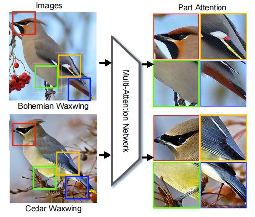
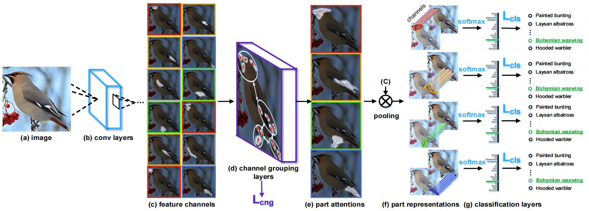
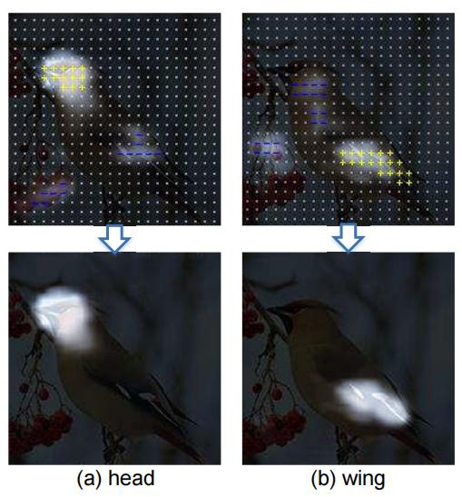
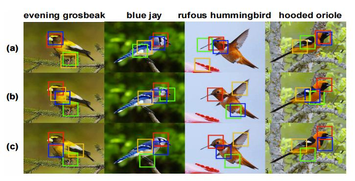
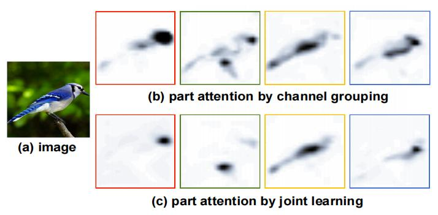
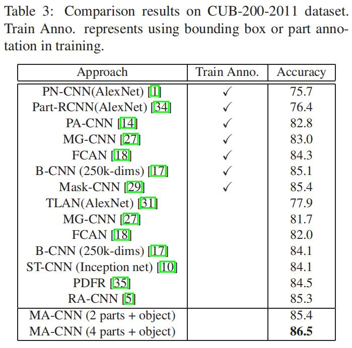
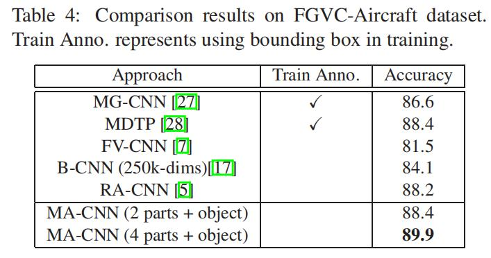
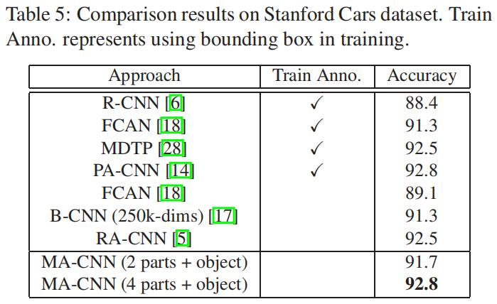

细粒度：MA-CNN¶
综述¶
会议时间：IEEE International Conference on Computer Vision 2017 (ICCV 2017)
源码地址：https://github.com/Jianlong-Fu/Multi-Attention-CNN（官方代码，caffe版本）、https://github.com/liangnjupt/Multi-Attention-CNN-pytorch（PyTorch版本）
针对领域：细粒度图像分类(FGVC)
主要思想¶
在没有显式部分约束的弱监督学习中（无额外标注），普通的CNN具有较差的局部定位能力（定位物体关键部位的能力）和细粒度特征学习能力。本文作者发现零件定位和特征学习可以相互促进，如下图中，最初头部的定位可以促进头部周围特征的学习，进一步反过来有助于精确定位头部。

作者提出了一种基于多注意力卷积神经网络（ multi-attention convolutional neural network， MA-CNN）的局部（part）学习方法。首先，卷积特征通道通常对应于某种类型的视觉模式（visual pattern），因此，作者设计了通道分组层（channel grouping layers）将空间相关的模式加权聚类成多个局部注意力图，进一步得到局部建议（part proposals），局部分类子网络（part classification sub-networks）进一步对局部特征进行分类，从而优化某一部位相关的一组特征通道，消除对其他部位的依赖，从而可以学到更好的细粒度特征。同时作者还设计了通道分组损失，鼓励通道分组层生成多个紧凑并且多样的局部注意力图，并且利用通道损失和分类损失交替优化网络，使网络的定位能力的学习和细粒度特征表示的学习相互促进。
方法¶
本文提出的网络结构主要由三个部分组成：卷积层（conv layers）、通道分组层和局部分类子网络，具体如下图所示：

首先将图片传入卷积层(b)中，提取基于区域的特征表示（feature representation），之后将得到的特征传入通道分组和加权层(d)，得到多个局部注意力图(e)，再将局部注意力图和特征相乘得到局部特征表示（part representation），最后将每个部分的特征表示传入全连接层，预测类别概率。作者还提出了交替学习策略来优化该网络，利用分类损失来优化特征表示，利用通道分组损失来优化注意力图的生成，从而达到局部定位（part localization）的学习和特征表示（feature representation）的学习相互促进的效果。
多注意力网络¶
给定一个输入图像X，首先将其传入预训练好的卷积层来提取基于区域的深度特征，假设得到的特征表示为W*X，其中W表示为卷积参数，特征尺寸为w\times h\times c，其中w,h,c依次表示特征图的宽、高和通道数。单一通道的特征很难表示丰富的局部信息，因此作者提出了通道分组和加权子网络，将空间相关的模式从一组峰值响应出现在相邻位置的通道中聚类为紧凑、有区别的部分。
直观地来说，每个通道的特征图可以表示为所有训练图像的峰值响应坐标（这里指将c个通道拆开，单个通道单个通道地看），即：
上述属于最理想的情况，直接指定通道的分组情况。但计算机往往不能优化离散的过程，因为只有函数连续，才能求导，从而进一步利用梯度下降法优化网络模型，因此在神经网络中往往以加权的情况来达到分组的效果，当第i个通道越属于第j个分组时，这一权重越大，反之越不属于该分组时，这一权重越小。
因此作者提出了通道分组层来近似实现分组的情况，为了分成N个组别，首先定义一组全连接层函数：
这里我感觉论文公式应该写错了，不是沿通道求和，应该是做全局池化。
最后再利用P_i(X)，得到局部预测，例如将P_i(X)传入全连接层。
优化策略¶
损失函数¶
本文中的MA-CNN通过局部分类损失和通道分组损失共同监督优化，总损失定义为：
每个分支所定位的区域需要有很强的辨识能力，并且最好可以集中于一个位置（每个局部注意力图所关注的点比较集中），并且不同分支之间所定位的区域最好不一样（不同注意力图关注不同的区域）。如果一个模型所有的分支只能定位一个有助于分类的区域，那么该模型的泛化能力就比较差（类似过拟合），一旦该部位被遮挡，那么将严重影响网络对该物体的分类决策。因此需要设计一种损失，既可以要求网络同一个分支可以定位相同的区域，还可以要求网络不同分支之间定位不同的区域，从而提高网络的鲁棒性，对此，作者提出了距离损失Dis(\cdot)和多样性损失Div(\cdot)，共同组成通道分组损失：
距离损失
Dis(\cdot)用于鼓励通道分组层所生成的局部注意力图M_i具有紧密的分布，可以表示为：
多样性损失
Div(\cdot)用于鼓励通道分组层生成分布多样的局部注意力图M_i，可以表示为：
交替优化¶
为了使模型局部定位和特征学习的能力相互促进，作者采用交替优化的训练策略。首先固定住卷积层(b)的参数，利用通道分组损失L_{cng}来优化通道分组层(d)的参数，从而提高模型的定位能力；之后固定住通道分组层(d)的参数，利用分类损失L_{cls}来优化卷积层(b)的参数，从而提高模型的细粒度特征表示的能力。两种优化过程交替进行，直到两类损失不再变化（即变化幅度小于某个阈值，类似RA-CNN中的优化策略）。
为了更好地说明距离损失Dis和多样性损失Div的机制，作者可视化了注意力图以及每个位置的导数，如下图所示：

区域越亮，表示注意力图的响应值越高，黄色的”+”表示需要加强的区域，蓝色的”-“表示需要削弱的区域，灰色的”·”表示不变。从图中可以发现，随着优化的进行，注意力图(a)的关注区域逐渐向头部靠拢，注意力图(b)的关注区域逐渐向翅膀部分靠拢，两者重叠的区域越来越小。
联合特征表示¶
由于单个局部的尺寸比较小，难以表示局部区域存在的细微差异，对此作者应用局部缩放，将原始小的局部放大成比较大的部分。假设输入图像X尺寸为448\times448，首先将其传入MA-CNN中，得到N个峰值坐标点（N表示分支个数），以每个峰值坐标为中心，裁剪96\times96的小区域，再将小区域放大成224\times224，输入到CNN中提取特征，得到局部特征表示，之后将局部特征和全局特征（即整张图像）合并：
实验¶
可视化分析¶
作者可视化了零件定位情况，如下图所示：

其中(a)表示只使用初始的通道分组层聚类，(b)表示只使用L_{cng}优化网络，©表示使用L_{cng}和L_{cls}交替优化网络。
作者还可视化了局部注意力图的关注区域，如下图所示：

精度对比¶
CUB-200-2011

Aircraft

Stanford Cars

总结¶
本文作者提出了一种用于细粒度识别的多重注意力卷积神经网络，同时提出了距离损失和多样性损失来优化不同分支的注意力，使得生成的局部注意力图具有紧密度高、多样性强的特点，并且利用交替优化策略实现判别区域的定位和细粒度特征的表示相互促进学习。
注：以上仅是笔者的个人见解，若有错误，欢迎指正。
最后一次修改日期：2023年1月10日